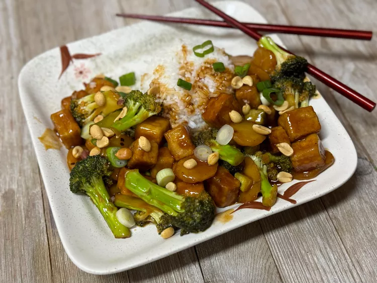

← Back to Home
Scalloped Potatoes

Description
In this tofu broccoli stir-fry, crispy tofu, broccoli, and water chestnuts are cooked with kung pao sauce and peanuts - a quick dinner option for weeknights. Serve over rice or noodles.
Ingredients(WIP)
- Vegetable oil
- extra-firm tofu cut in cubes
- Butter
- Flour
- Seasoning: Salt & Pepper
- Additional: Crumbled Bacon/Cubed Ham
Steps(WIP)
- peel and slice thinly about 2 pounds of potatoes, and set aside in a bowl of cold water to prevent browning and heat your oven to 350.
- Whisk equal parts butter and flour, melting the butter in a skillet
- Season well
- Layer Potatoes
- Pour sauce
- Add crumbled bacon or other items per preference
- ...